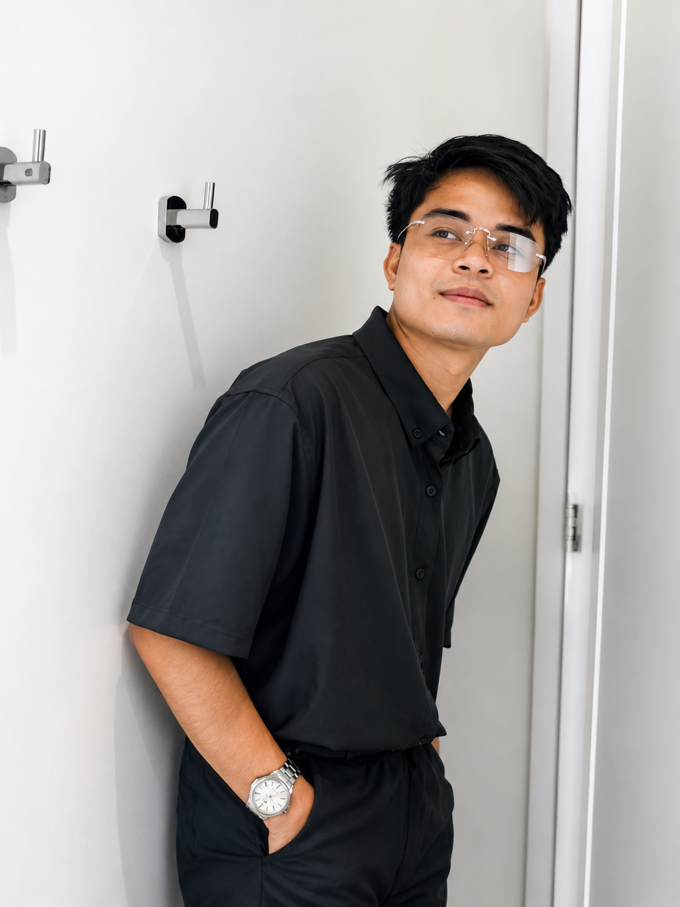

Nana’s Green Tea
A modern Tokyo-born matcha café in Las Vegas
Web developer portfolio · 2026
Five live websites across hospitality, luxury homes, restoration, and automotive services.
A modern Tokyo-born matcha café in Las Vegas
Luxury custom homes and sophisticated remodels
Brick, stone, and façade restoration across Chicago
Window tint and car audio in Montclair, California
Vehicle wraps, paint protection, tint, and coatings in Las Vegas
Capabilities
Choose a service to see where I can help, what is included, and the best next step.
Responsive WordPress builds and improvements shaped around your content, workflow, and next useful action.
Included
Store experiences that make products easier to understand and purchasing easier to complete across devices.
Included
Practical search and performance improvements that help visitors find the right page and use it comfortably.
Included
Connected marketing support that keeps leads, email, content, and routine updates moving with fewer loose ends.
Included

About me
I’m Jaymark Tauto-an, a Cebu-based web developer working across WordPress, WooCommerce, Webflow, and client delivery.
I connect design, development, SEO, performance, and project coordination so the finished website looks considered, works across devices, and stays useful after launch.
From hands-on website builds to leading delivery. Explore the work behind each role.
Development + delivery
Senior Web Developer Specialist
& Senior Project Manager
Website delivery from project planning through development, quality assurance, and performance work.
Planning → Build → QA → PerformanceClient websites
Senior Web Developer
Client website development and content work, supporting the digital presence behind each business.
Development / Content / Client deliveryHospitality + content
Web Developer & SEO Content Writer
Webflow development and responsive fixes, paired with SEO and website content for Nana’s Green Tea.
Design + development
Web Designer & Web Developer
Webflow design and development for C&M Home Designs, with reusable sections and a focus on usability.
Available for new clients
A new website, a better storefront, or something that needs fixing? Tell me what you have in mind.
Prefer a direct hello?
Your next project
No perfect brief needed. Just the basics.